Cover Story–AppleScript
By Dan Vanderkam
Requirements: RB DR1r34 or higher
If there's a feature you need for your program, but RB doesn't support it, there are usually four things you can do: Find a Plugin, Find an XCMD, Find an AppleScript, or write an AppleScript.
RB has allowed AppleScripts to be added to a project since DR1r10. With that new feature, RB could control other apps and the system to a much greater extent. However, there was a drawback: the scripts had to be preset, and it only worked with AppleScriptable applications.
In DR1r34, this problem began to recede with the introduction of the AppleEvent object (and all of its incredibly long-named associates, like the ever popular GetStringComparisonObjectDescriptor function). RB's Apple Event support didn't add a large number of new abilities, but it let you access those abilities from RB code, not from an AppleScript. This made integrating those features into your project more effective, if not simpler.
However, what if you want your application to be scriptable? That's quite a different story. Most RB programmers don't know how to make their apps scriptable, but when you finish reading this article, you'll be one of those few who do (assuming everyone else hasn't read this article before you, of course...) And, unlike most cover storys from the past few months, this doesn't require a vaguely new version of RB, let alone 2.0.
Setting it up
Like any application, a scriptable application needs an interface. Our particular example is designed to be controlled only by AppleScript, so it's interface is simple: One window with one pushbutton, and a hierarchial list. Just make a window that looks like this:
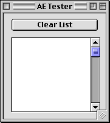
Be sure to set the hierarchial property of the listbox to true. The button will clear whatever is in the list, so in its Action event, put the code Listbox1.DeleteAllRows.
That's all that this window needs to do. As this is our only window, you may be wondering some things about this project. After all, it has a listbox, but absolutely no way to add items to it! However, this is where AppleScripting comes in.
Next, create a new class in the project window, and set its super to Application, like so:
Now, open up the code editor. There should be a "HandleAppleEvent" event in there. That's what we'll be putting our code in.
Adding Apple Events and "Eep"-ing
When System 7 rolled out, Apple told developers that they needed to add support for Apple Events to their apps. All applications needed to support the Open, New, Run, Quit, and Print events. These four are called the required suite. You can access all of these through events in the Application class (its OpenDocument, and NewDocument events).
However, some apps go above and beyond the required suite. Going above and beyond with Apple Events is the first step to making a scriptable application.
Our example program will understand three Apple Events:
• Eep (which makes the application beep wildly),
• AddItem (which will add either an item or a folder to a list box), and
• GetCount (which returns the number of items in the list)
In the code editor, you'll see that the HandleAppleEvent event has three parameters:
The event parameter lets us access various bits of information about the Apple Event. Since our first event, Eep, doesn't have any parameters, and doesn't need to return any data, we can ignore this. The eventClass parameter is a four letter code telling you what suite the event is in. We can ignore this one too. eventID is also a four letter code, and it tells us what type of event is being given to us. This is the important one.
Let's make the Eep event's four letter code EEEP. Whenever we receive an Apple Event of this type, we'll make the computer beep three times. Here's the code for that:
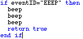
The If statement checks if the eventID is for an eep. If it is, we beep three times, and return true. The return true part is important, because if it isn't present, the application that sent the Apple Event will think that an error has occured.
Adding an item
Our next Apple Event is a bit more complicated. The AddItem event will take two parameters: A string (which is the item to be added), and a boolean (whether it's a folder or not).
To get these parameters, we need to delve into the AppleEvent class. Specifically, there are two methods of it that we need to access: BooleanParam, and StringParam. These both take one parameter: (yet another) four letter string. This means that we'll need to give each of the parameters four letter names. The Item that's going to be added will be '----', and the boolean that determines whether or not it's a folder will be 'fold'.
As you may recall, the AppleEvent class that we're given is called "event". So, the code to add an item should look something like this:

The first two lines make a string variable, and put the string parameter of the Apple Event into it. The rest of the lines add either a folder or an item based on the boolean parameter.
Like the Eep event, this also needs a four letter ID. Because it displays an item, we'll make the code "DISP". Here's what the whole HandleAppleEvent code looks like:
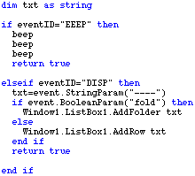
The Number of Items
Now that we've taken down the first two Apple Events, we only have one left to go: GetCount. If you followed what we were doing to create the last Apple Event, this one will be a breeze. It doesn't take any parameters, but it's different from the others in that it has to return an integer. What it returns is the number of items in the listbox. Its four letter code will be "GNUM".
In DR2, there are seven types of replies we can send. For this example, we'll want to use the AppleEvent class's ReplyInteger property.
Finding the number of items in the list box is simple enough: just use its ListCount property. So, to return the number of items, we just need to set event's replyInteger property to ListBox1.ListCount. Here's the code:

Adding that to the rest of the HandleAppleEvent code will give us this:
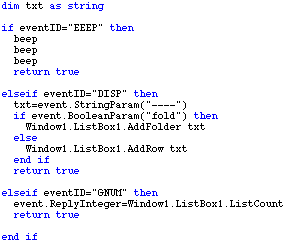
That's all the code we need to write in this, but we're far from finished. At this point, you could write another application that sends commands to this one, but it's not neccesary. If you'd like to see how it's done though, and you have the StuffIt version of RBM, there's an example of this in the Source Code folder.
Building the Project
To use AppleScript, your application absolutely needs a creator code. So, open up the Project Settings window (under the Edit menu), and give it a creator. For this example, I've used "MYaa":
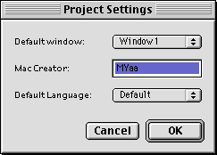
Now, we'll need to compile the app. Give it a descriptive name, like "AE Tester". The rest of the info isn't particularly important, so just click Build.
Adding an 'aete'
Believe it or not, the only thing that an application needs to be scriptable is one resource: aete. It stands for Apple Event Terminology, and it tells the AppleScript Editor what types of events your program supports, what they're called, what they do, and what parameters they take. Unfortunately, ResEdit doesn'thave an aete editor, so you'll have to go with either Resourcer, or download an aete editor I made in RB especially for this article, which will be on the RBM main page soon. Or, if you're willing to use a different interface than the one that's presented in this article, you can get a copy of the ResEdit 'aete' editor at from this site. For this particular example, I'll be using Resourcer's editor, which is the best of the three. Not all editors are exactly the same, but they're usually fairly similar.
First, open your application in Resourcer, and click on the New button. When it asks you what type of resource you want to add, fill in this info:
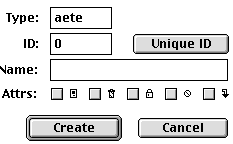
And then click the Create button. The ID must be zero, or the application won't be recognized as a scriptable one. You can also make the resource "aeut" (Apple Event User Terminology), but why bother?
Now, double-click the new aete resource. You'll be presented with Resourcer's amazing aete editor, which many say is worth the program's price alone:

To start off, we'll add the required suite. Click the New button, and fill out the rest of the info, like this:
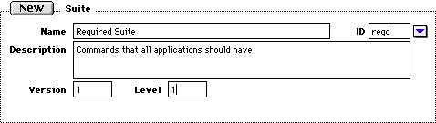
Because AppleScript knows what the required suite is, this is all we have to do to add it. Next off is our application-specific suite. We'll call it the AE Tester Suite, and give it a code of MYaa (the application's creator code):

Eeping
Because AppleScript most certainly doesn't know what an AE Tester Suite is, we'll have to teach it. This is what the "Events" list is for. The first item that we'll add is the Eep command. In AppleScript, we should be able to do this simply by saying "Eep", so that's what we'll name the command:
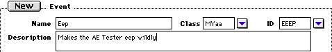
Because no data is returned, we can ignore the bottom few items. However, you may want to look through the list of return types anyway. It just goes to show how far RB has to go before it has fully functional AppleScript support...
AddItem
The next command is the AddItem command. This doesn't return anything either, but it does have parameters. First, we'll add the event, like so:
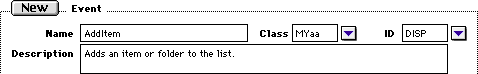
We haven't added any parameters for this yet, so click on the Parameters list box, and select the direct object item. This will be the string to add. So, type in TEXT for its type, and give it a helpful description:
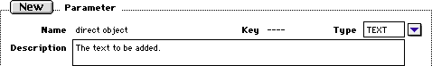
AddItem has another parameter: a boolean. So, click the new button, and type this in:
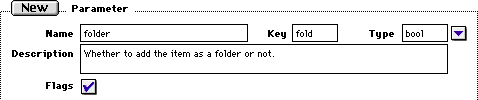
The Key is what we called the item in our code. As you may have noticed from the Direct Object editor, direct objects always have the key "----". What exactly IS a direct object? A parameter that doesn't need a preposition in front of it, of course! Sometimes AppleScript is so much like English that it's silly.
Because this parameter is optional, choose "Parameter is Optional" from the flags button.
GetCount
Because the GetCount command doesn't have any parameters, it's a lot easier to add than the AddItem command. Just switch back to the Event list, and click new. Fill out this info:

The Reply type is what type of item is returned by this Apple Event. 'long' is AppleScript's four letter code for an integer.
Now, we're done with the aete! Close the window, save the file, and quit Resourcer.
Writing a Script
Now, run the AE Tester application, and open up Apple's Script Editor application. If you've used AppleScript before, you'll know that you can open any application, and see a list of its commands. Believe it or not, this comes from the aete resource as well! If you drag the AE Tester application onto the Script Editor, a dictionary will open up for our program.

Yes, there is a reason why all dictionaries look very standardized—they are!
Now, we're ready to create a simple script. Make sure you have the AE Tester app open. In a new script window, try this:

If you've done everything correctly, the AE Tester app should beep twice, Add two items called "An Item!", and add a Folder called "A folder". Yes, this application is definitely scriptable.
Other things
Even though RB's implementation of Apple Events isn't incredibly thorough, there's still a lot that you can do with them. With a good knowledge of Apple Events, and a good aete editor at your side, there's nothing stopping you from adding AppleScript to all your apps—and making them just that much better.
If you've been thrilled by this article though, you'll be thrilled when next month's issue comes out with an article on making your progam AppleScript recordable!